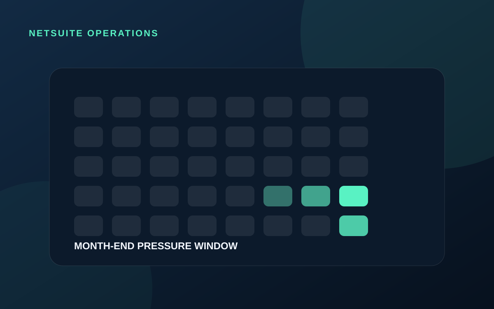

ERP OPERATIONS
Why NetSuite teams feel the pressure around close
Month-end pressure is created by dependencies. Transactions, integrations, approvals, reconciliations, reports, and users all need to finish in the correct sequence.

Close exposes weak links
During normal days, a delayed integration or incorrect classification may be inconvenient. Near close, the same problem can block reconciliations, reporting, revenue activity, approvals, or downstream systems.
The work arrives from many directions
- Failed or delayed integrations
- Unexpected approval routing
- Saved search and report differences
- Unbalanced imports or journals
- Permission and period-lock questions
- High-volume scripts and governance issues
Preparation matters more than heroics
Teams reduce close pressure with monitoring, runbooks, clear ownership, early validation, controlled deployment windows, and known escalation paths. The goal is not to remove every issue; it is to detect and resolve issues before they become close blockers.
A stable close is usually the result of small operational disciplines practiced throughout the month.
Protect production during critical periods
Changes close to period end should have clear business value, targeted testing, a rollback path, and appropriate stakeholder awareness. Technical speed matters, but controlled judgment matters more.
Discuss the current process and the clearest technical next step.